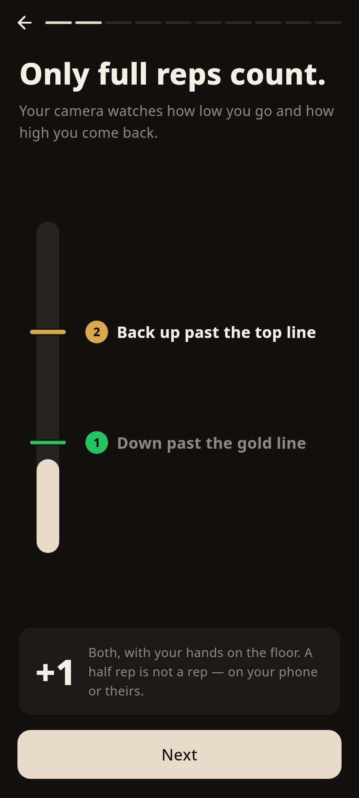

البار نفسه اللي في الماتش (من غير خطوط): بيفضى وإنت نازل وبيتملي وإنت طالع. الصورة دي لحظة الطلوع (البار أخضر، الخطوة 2 منوّرة). الرسمة بتتحرك 4 عدّات وتقف زي دلوقتي.
دلوقتي (من CI)

A — الخطوتين عند طرفين البار
"1 Down until the bar is empty" تحت، و"2 Up until it's full" فوق. الكارت تحت زي ما هو.
B — زي A + ألوان البار
نفس A، وتحت البار سطر صغير بيشرح الألوان: نازل / طالع / إيدك اتشالت من الأرض.